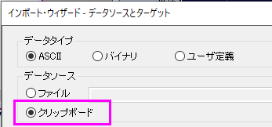

ウィンドローズグラフは、ある場所で一定時間計測した風速および風向データを表すのに使用します。このチュートリアルでは、Origin9でウィンドローズグラフを作成する方法を示します。
このチュートリアルでは、以下の項目について説明します。
このチュートリアルは、チュートリアルデータプロジェクト（<Origin EXE フォルダ>\Samples\TutorialData.opj）と関連しています。
また、ラーニングセンターからこのグラフを呼び出すことができます。(ヘルプ：ラーニングセンターメニューを選択、または キーボードのF11
キーを押して、グラフサンプル：統計グラフを選択します)

ビン化データをワークシートにインポートするには、Binned Data 1
(ヘッダを含む)をコピーして、ファイル：インポートウィザードを選択します。データソースグループで、クリップボードチェックボックスを選択し、完了ボタンをクリックしてOriginにデータをインポートします。

| 方向 | 0.-4 | 4.-8 | 8.-12 | 12.-16 | 16.-20 |
|---|---|---|---|---|---|
| 22.5 | 3.125 | 3.125 | 3.125 | 6.25 | 0 |
| 45 | 0 | 3.125 | 3.125 | 0 | 0 |
| 67.5 | 0 | 6.25 | 0 | 0 | 0 |
| 90 | 0 | 0 | 0 | 0 | 3.125 |
| 112.5 | 0 | 0 | 0 | 0 | 0 |
| 135 | 3.125 | 0 | 0 | 0 | 3.125 |
| 157.5 | 0 | 0 | 9.375 | 3.125 | 0 |
| 180 | 3.125 | 3.125 | 0 | 3.125 | 3.125 |
| 202.5 | 0 | 0 | 0 | 0 | 0 |
| 225 | 0 | 0 | 3.125 | 0 | 0 |
| 247.5 | 0 | 3.125 | 0 | 3.125 | 3.125 |
| 270 | 0 | 0 | 0 | 0 | 3.125 |
| 292.5 | 0 | 6.25 | 3.125 | 0 | 0 |
| 315 | 0 | 0 | 3.125 | 3.125 | 0 |
| 337.5 | 0 | 0 | 0 | 0 | 0 |
| 360 | 0 | 6.25 | 0 | 0 | 0 |
| 382.5 | 0 | 0 | 0 | 0 | 0 |
素データをワークシートにインポートするには、素データ (ヘッダを含む)をコピーして、ファイル：インポートウィザードを選択します。データソースグループで、クリップボードチェックボックスを選択し、完了ボタンをクリックしてOriginにデータをインポートします。
| 方向 | Speed |
|---|---|
| 311.5 | 12.75 |
| 142.7 | 11.18 |
| 161.6 | 5.9 |
| 277.3 | 8.24 |
| 155.3 | 13.46 |
| 40.8 | 8.57 |
| 43.4 | 4.38 |
| 1.3 | 10.91 |
| 78.8 | 18.72 |
| 237.8 | 16.22 |
| 114.6 | 0.88 |
| 2.1 | 12.05 |
| 290.5 | 4.6 |
| 174.1 | 3.29 |
| 267.6 | 16.64 |
| 8 | 5.6 |
| 213.9 | 8.04 |
| 134.8 | 17.26 |
| 137.6 | 11.87 |
| 46.1 | 5.48 |
| 4.5 | 13.47 |
| 311.2 | 10.17 |
| 154.4 | 11.17 |
| 176.2 | 18.91 |
| 348.1 | 4.11 |
| 225.2 | 6.65 |
| 236.4 | 12.87 |
| 11.7 | 1.07 |
| 278.9 | 4.36 |
| 356.5 | 5.01 |
| 58.9 | 7.3 |
| 161.8 | 15.6 |